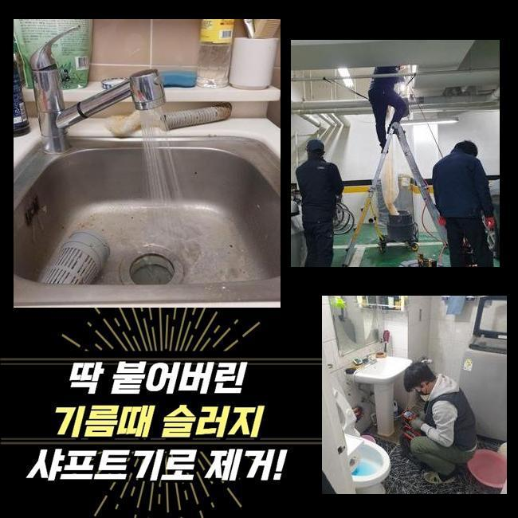
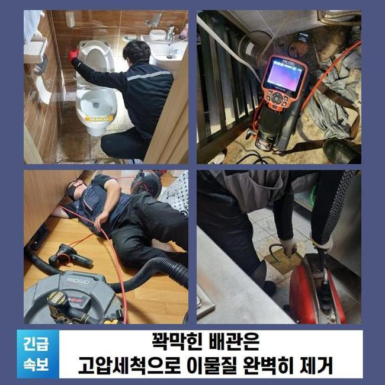
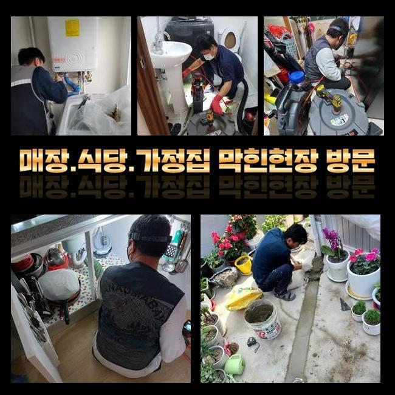
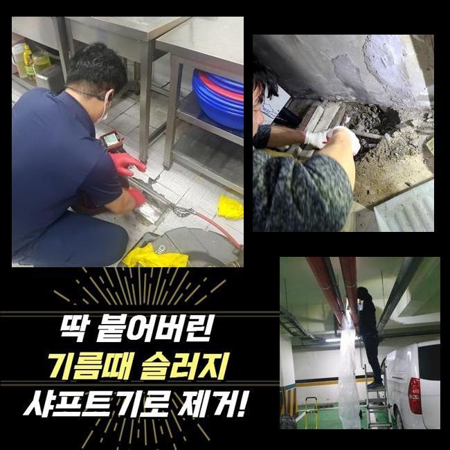
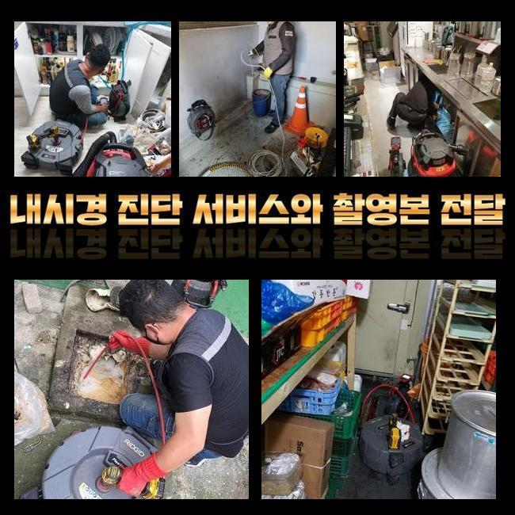
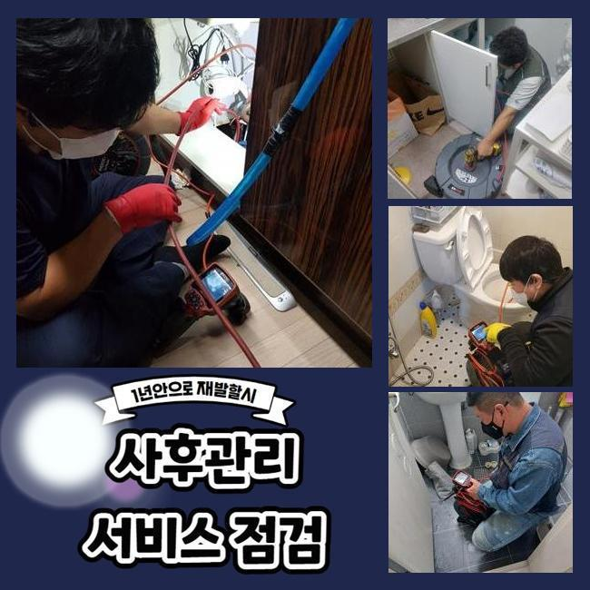

🏠 서대문 합동화장실역류 남가좌동 배관내시경카메라 누수공사
용인 싱크대막힘 전문 시공 후기

📋 작업 개요
- 위치: 용인
- 서비스 유형: 싱크대막힘, 배관막힘, 누수수리, 역류해결, 뚫는업체, 고압세척, 설비공사, 악취차단
- 작업 일시: 2025. 3. 29. 15:05
- 업체명: 하수구수사대 (010-5615-2118)
🔍 문제 상황
서대문 합동화장실역류 남가좌동 배관내시경카메라 누수공사
욕실이나 주방공간은 없어서는 안될 장소죠
따라서 생활하다가 급작스럽게 배수기능에 문제가 생기면 고충은 말로다 형언하기 어려울겁니다
그러나 배수와 관련한 문제들을 크게 신경쓰지 않으시는 고객분들이 많죠
얼마 뒤에 증세가 사라지거나 최소한 악화되지는 않겠다고 간주하기 때문이죠
그렇지만 현실적인 상황은 그것과 다르죠
이와 관련 그것을 처음시기에 온전하게 처치한다면 골치아픈 상황에 놓이지 않을 수 있답니다
배수기능이 저하되었다는건 하수관의 특정 지점에 유동성을 저해하는 찌꺼기가 있단 소리죠
이물질들이 추가로 누증돼 한층 까다로운 사태로 치닫기 전 전문가를 수소문하여 조사를 시행한뒤에 세척해나가야 하죠
5일전 방문하였던 데를 신밀하게 설명해드리고자 합니다
이같은 문제들로 기술자를 찾고계시는 이웃분들에게 조금이나마 도움됐으면 하네요
저희기술팀이 출장간 데는 꼬마빌딩에 소재한 식당입니다
의뢰자께선 싱크대와 욕실배관까지 점진적으로 물이 안내려간다고 설명하셨어요

🔎 원인 분석
💡 전문가 진단: 정밀 진단 장비를 사용하여 슬러지의 고착 여부를 판명하고 타격/세척 작업을 실시했습니다.
일절 안빠지는건 아니며 얼마 지난다음엔 흘러내려갔기 때문에 차후에 고쳐보자는 생각으로 영업하고 있으셨다고 하네요
이러한 결과물로 정체가 가중되었기에 물흐름이 멈춰버렸고 물이 역류되는 사태까지 일어나게 된거죠
배관구조는 난해하고 좁다란 통로로 되어있어요
그렇기에 맨눈으로 살펴봐서는 슬러지가 얼마큼 존재하는지 알수가 없습니다
그렇기에 현장으로 넘어갈때는 내시경기기를 필수적으로 소지해야 해요
배관내시경의 내부에는 카메라가 있죠
그것으로 직관이 힘든 배수관 안까지 세밀하게 검사가 가능한것이며 찌꺼기의 종류까지 파악할수 있는거죠
이것으로 확인해본 배수관 내부는 엄청나게 더러웠는데요
석회성분을 포함하여 크고작은 잔재들이 적체되어 있었어요
이러한 물질들이 들러붙어 돌처럼 굳은 상태였기 때문에 좁디좁은 배수길을 차단하여 물빠짐이 올바로 되지 않았어요
그냥 내버려둔다면 사이즈를 증대시키면서 배관에서 떨어지지 않게 돼요
그렇다면 더욱더 정황이 나빠지는 것이기에 조속히 고쳐야 했죠
이러한 상황에서 활용하는 기계는 플렉스샤프트라는 것인데요

🔧 작업 과정
좁디좁은 구멍에도 가볍게 진입이 되는 특성이 있어요
노즐의 끝부분에는 체인노커라는 부속이 존재하여 빠르게 회전하며 파이프내부에 체류중인 딱딱해진 여러가지 침전물을 바스러뜨리게 되죠
이어서 샤프트 분쇄작업을 시행하였는데요
전동기기와 노커를 연결하고 나서 샤프트장비를 작동하여 굳어진 잔존물을 제거해 나갔습니다
배관 어느곳에 찌꺼기들이 모여있는지도 확인해야 됐기에 배관카메라 사용도 동반진행 하였어요
이것으로 누증량이 많은데를 기점으로 시공해나가면 한층 빨리 끝마칠수 있어요
배수관 안쪽면이 훼손되는일이 없도록 조심하면서 이물질만 정확히 조준하여 제거해 나갔습니다
혹여 세정을 하는 과정에서 배수관에 압력을 준다면 크랙이 일어나 누수증상이 일어나기도 해요
그렇기에 내시경설비나 분쇄기기가 구비되어야 하는 부분도 필수이지만 담당자의 테크닉도 충분해야 할것입니다
노폐물들이 잔류한 장소를 정결하게 정비하고나서 작은 조각들까지 세척하였습니다
그리고 통수시험을 시행했어요
수돗물을 양동이에 담아 일시에 배수문으로 쏟았으며 흐름이 지체되거나 역류가 일어나지는 않는지 조사해 보았죠
신속하게 소멸되는걸 검증한후 즉시 또다른 수리공간으로 자리를 옮겼어요
여기서 정리한다면 몇달간 이용하시기에는 괜찮겠으나 나중에 정체가 발발할 가망이 상존하기 때문이었답니다
화장실의 관로와 이어진 횡주관도 조사하여 노폐물 누적 상황을 알아보기로 했죠
화장실 배수관에서 체증이 일어났을때 연결되어 있는 횡주배관까지 슬러지가 적체되었을 여지가 높으므로 전체적인 하수관 세척작업을 실시하는게 마땅해요
그렇기에 횡주관으로 이동해 관측을 시작하였고 저희 예상대로 관벽에 달라붙은 노폐물들을 발견할수 있었답니다
횡주배관 및 그와 연결된 파이프들까지 점진적으로 샤프트장비를 이용하여 정비하였고 이물질이 사라진 깔끔해진 배수관을 포착할수가 있었어요
플라스틱 등의 녹기어려운 폐기물들은 샤워나 세안을 하시면서 다시 쌓일 수 있죠
그러하기에 일년에 한두번은 배관전문가를 통해 정비하시는 편이 바람직하다고 설명드렸죠
더불어 일상중에 하수관을 보호하는 방책들도 쉬이 이해하시도록 친절히 안내드렸답니다


✅ 작업 완료
관로에 이상이 생긴다면 일상에 큰 불편을 감내해야 하기에 해당 사태까지 커지지 않게 꼼꼼하게 예방을 시행하는게 합당합니다
휴일에도 영업한다는 내용도 말씀드렸답니다
20년 이상된 거주지에선 누수현상도 자주 발생되기에 해당 수리요청도 많죠
이에 즉시 뚫음뿐만 아니라 누수시공도 하고있다는걸 설명드렸답니다
어디에서 고장이 생겼고 며칠전부터 그런건지 문자나 전화로 알려주시면 더더욱 신속하게 견적을 드릴수 있답니다
또한 예약시간에 맞춰 담당자가 도구들을 챙겨서 출동하고 있사오니 필요할때 문의주시길 부탁드립니다




⚠️ 베란다 누수 및 방수 관리 방법
- ✅ 비가 많이 올 때 창틀 주변이나 아래층 천장에 얼룩이 생기는지 정기적으로 확인해 보세요.
- ✅ 우수관 주변 실리콘 마감이 들뜨거나 깨진 틈새가 있는지 손상 여부를 수시로 체크하세요.
- ✅ 베란다 바닥 타일의 줄눈(메지)이 소실되면 그 틈으로 물이 침투하여 누수가 유발됩니다.
- ✅ 누수 의심 증상 발견 시 방치하면 아래층 손실이 커지므로 즉시 전문가의 진단을 받으십시오.
💡 핵심 정리
- 확실한 장비 작업(내시경 점검 및 샤프트 스케일링)으로 원인을 뿌리 뽑습니다.
- 작업 후 1년 이내에 동일한 부위 재발 시 100% 무상 A/S 서비스를 보장합니다.
- 서울 · 경기 · 인천 전 지역에 24시간 언제든 긴급 출동할 수 있도록 항시 대기 중입니다.
❓ 자주 묻는 질문 (FAQ)
🚨 용인 싱크대막힘 문제로 고민이신가요?
정확한 원인 진단과 확실한 시공으로 재발 없는 해결을 약속드립니다.
24시간 긴급 출동 | 서울 · 경기 · 인천 전지역 | 1년 내 재발 시 무상 A/S